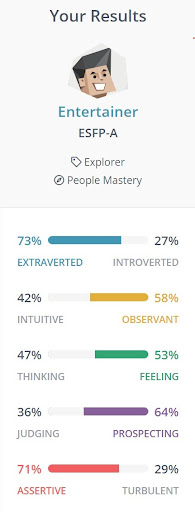

Intro/Teamwork
Shaun Jones: The Thursday Beers S3920130
So I’m Shaun, im 36 years young from Mount Evelyn in the Yarra Valley. Finished high school back in 2002 where I completed year 12 with some IT subjects, and fell into a trade. Now married with 5 kids, currently I own and operate a plastering business where I am also a project manager, with 5 current full time employees. Fair to say I’m pretty busy. I currently play and coach senior football at Mt. Evelyn where I’ve played over 270 senior games. I also enjoy watching sports and going to gym, as well as going to concerts and BBQing meats on the smoker. I’ve decided to get into IT at this stage as it’s finally something I can find myself doing. I have had a previous passion for IT in high school and through gaming when I was younger. Now is the time to get back involved
As my personailty results show from assignment I probably prefer to take A little bit of control in a group setting, especially given some of my background as a project manager. I sometimes can come across as a bit loud and overbearing and try to not specifically do that, especially in a new group. However given any setting I do not have a problem with giving my opinions or making decisions, as I prefer to delegate anyway. I, however, always welcome everyone’s opinions and ideas as more heads are better than one. I think all my personality tests express these traits, especially the entertainer personality. It clearly shows I'm very comfortable in front of a group.
Crispin Tuy Mills S3915883 Team: The Beers
Hello, my name is Crispin and I graduated high school in 2020 in Tasmania and moved over to Melbourne after taking half a gap year. I am half Khmerand half British, but I was born here in Australia and lived here the majority of my life. My pastimes are watching TV shows, playing video games and hanging out with friends. I don’t really have any other major hobbies. The reason why I moved from Tasmania to Melbourne was because Tasmania only had 1 university andMelbourne has more employment possibilities in the IT field than Tasmania.
When working in a team structure, I think the biggest strength is the communication because being a good projector and listening is very important to the team’s core and having that easy flow is beneficial to everyone in the team. The personality type states that micromanagement could be an issue for Campaigners, but I would consider myself too laid back to micromanage the whole group. Being inspiring and caring is something that campaigners excel at in a team environment whether they are a team leader or just a member. I think being able to take criticism and being comfortable with the team is also a good trait to possess
Michael Clutterbuck S3897411 Team: The Beers
I am from Spotswood, Victoria, in the western suburbs of Melbourne. I have lived there most of my life. And went through all my stages of schooling within there. I have generally always been interested in aspects of IT, such as programming in different languages. But began utilizing it by taking part in IT related subjects in middle to late high school. Some hobbies of mine include playing and watching sports, primarily basketball, playing the acoustic guitar, and socialising with mates.
The personality type I received from the test was ‘Virtuoso’. Being primarily introverted or over extroverted. With the energy directed to observant over intuitiveness. The decision making element is primarily thinking over feeling, being at 58% to 42%. The tactics area primarily leans towards prospecting over judging, whilst the identity is mostly turbulent over assertive. My primary focus to work on would be my assertiveness and extrovertedness, as I consider myself a shy person.
Ethan John Souleles S3899866
I am from Fawkner, Victoria, Australia. I am half Greek, a quarter Maltese, and a quarter Australian. I am currently undertaking the Bachelor of Information Technology. I’ve been interested in IT basically ever since I got my hands on a PC, tinkering with various hardware and software. I want to work as a Network Engineer when I finish my degree. My hobbies include going to the gym, playing video games, and (very) casual cycling.
The results of these tests show that I am a neutral and more observant individual that tends to keep thoughts, ideas, and opinions to myself in order to avoid conflict and disagreement with my peers. In terms of the learning style test, it seems that I learn with a combination of the three styles, which makes sense to me because different skills require different learning styles to know. A point that does come up on both the 16personalities Test and the Big Five Personality Test that I do agree with is that I do have a tendency to cooperate rather than compete with others and avoid conflicts. In a group setting, this would make me a suboptimal leader as I am less able to “put my foot down” when it comes to decision making, I’d rather do as I am told to get the task done and move onto the next thing. It would be easier and more comfortable for me to be assigned a particular task(s) in a group project and just get them done rather than being the sense of direction for the group. Another point that comes up is that I tend to be more observant, but I keep to myself. This could be problematic in a group setting as I could find another solution to a problem or find another way to complete a task, but since I keep to myself and want to avoid conflict, I may not bring that solution to the group’s attention.
I'm Rhys Miller S3842115
I was born and raised inMelbourne, Australia. I’m 20 years old and currently working at Supercheap Auto whilestudying at RMIT. I graduated highschool in 2019 and went on to studying A bachelor ofapplied science (construction management) at RMIT for a year before deferring due to lackof interest. I started studying the undergraduate program in information technologybecause of my interest in building computer systems from early high school along withwatching Linus Tech Tips. Other than building systems and taking informatics in VCE I havevery little other experience with computers and IT. My biggest hobby is cars. I currently owna 1990 Z32 300ZX, and a 1998 GC8 WRX as a project car as well as a 2013 GT86 as a dailydriver but I also enjoy going to metal Gigs with mates on the side too.
Looking at my personal profile information from it showed that I'm a very spontaneous person who goes through sporadic amounts of drive to work and then not work. I seem to flourish in situations where more pressure is present and it gives me drive just as the “pressure makes diamonds” saying goes. According to my personal qualities test I’m a high energy individual who is more of a tactile learner so I enjoy teams that are more verbal communication based so that energy can be expressed. Some weaknesses though are that I tend to take more risks as well as talk over people, so I will need to keep an eye out for that when working in a team.
Teamwork and meetings:
So throughout the assignment we've worked well together and had to record a lot of our meeting to prove it. Here are the recordings for our organising of the work that had to be done, plus a short file with all our orgainsing of such a project. Obviously with the lockdown it was hard not meeting face to face but we made it work...
REFLECTIONS
Crispin’s Reflection
During the beginning of the assignment, the meetings were a bit hard to get full attendance of everyone in, which I am to partially blame as I had trouble with the set times. After the first few, we were able to get into it and start getting everyone turning up. What I believe went well was during the meetings, we were able to concisely delegate tasks to everybody and make sure everyone was aware of their responsibilities within the group. What could have been improved was that one of our members was falling behind during the end and we didn’t realise until the last couple of days that this was a problem. I think we should’ve caught on sooner and reached out to check on things as it would give us time to rethink and adjust our planning towards the assignment. The one thing that surprised me was that although it was in lockdown and online, we were still able to work really well together online in a team environment and troubleshoot the problems that arise together. At least one thing I learned about groups was that we don’t have to all meet face to face to get a good connection going, we managed to do all of this online and worked amazingly together. Discovered nachos, they looked amazing.
Ethan’s Reflection
All and all, I think we performed fairly well as a group on this assignment. We had a few bumps in the road at the start, getting people situated on Microsoft Teams and finding suitable times where we could all meet up and discuss the assignment. Once we sorted that out and delegated tasks and responsibilities, we were on our way to work. We had an issue with a team member who went “missing in action” for a majority of the assignment, which is something that we as a group should have picked up earlier. Shaun (who you can tell is fed up with our missing member) and I had to pick up the extra slack that was left behind. In future assignments, I need to do regular check-ups on members to make sure that everyone is active and on task. I was impressed with our ability to work together as a team in an online environment. Came for the ride, stayed for the nachos. Sincerely, the 2am boys. Sponsored by Monster Energy.
Shaun’s Reflection Piece:
The whole group (minus James M.I.A) worked well together. From bonding over 13 dollar nacho’s to 2008 banger photos the work got done and friendships bonded. Even with a lack of James (who I'm sure discovered that tooheys red was on special and has been on a 3 week bender). The input that came from everyone throughout the journey you clearly had to be on, was great from the start. There were a couple of meetings where probably Rhys or Crispin were on the red wine and didn't show up to but didn't slow our process. We had the intensity of a 2002 slipknot concert when working on this project, even though Crispin completed the reflection before anyone had actually finished. Overall though the pressure put on us after James’ disappearance really did make diamonds. And even though we're sad about James, emo’s not dead and that’s how we roll. Greatest nachos ever. Tree trunk legs at private school were definitely the aim. Sincerely yours… the 2am club
Rhys’ Reflection:
Need to keep this brief since we are well over the word limit. But we had a bit of a rocky start figuring out how to communicate efficiently and some members were not joining team calls. We finally sorted that out and it's been smooth sailing since. We have had a bit of trouble communicating with some members but we have overcome that and worked around it. Ideally we should have ironed these issues out earlier but hindsight is 20/20 but it seems that we have overcome the issues that presented and we are on track. Delegation of tasks went smoothly and it seems that every problem we’ve had since them has been resolved with teamwork. I'm keen to finally meet up with the team after lockdown for some nachos :).
XOXO The 2AM boys
Michael’s Reflection:
The group as a whole interacted well via Microsoft Teams. We all got along very well with no dramas. Everybody contributed, taking on their assigned tasks and getting it completed by the due date. Some improvements could have been made throughout the assignment. As we had a relatively slow start, the majority of the workload has been towards the end of the assignment. But everyone has been keeping up and completing all their tasks. The most surprising aspect of the assignment would be the quality of the html website, along with the communication that we all have contributed to, besides one team member. But at the start of the assignment, we discussed what mark we all would be relatively happy with, and settled for a passing mark. Everybody within the group has worked in some sort of team prior to this assignment, whether it be in previous schooling or at work, or in the kitchen making nachos. Despite this, we have all learnt something regarding working within a team environment, whether that be within the aspect of communication and attendance, or through structuring the workload, or even the socialisation part of the experience. All are valuable assets to have learnt, and can be used in the future whether that be working in a team for further education, or within a work environment.